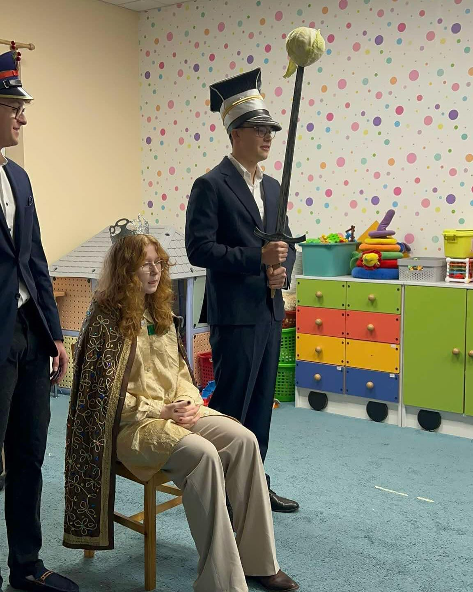
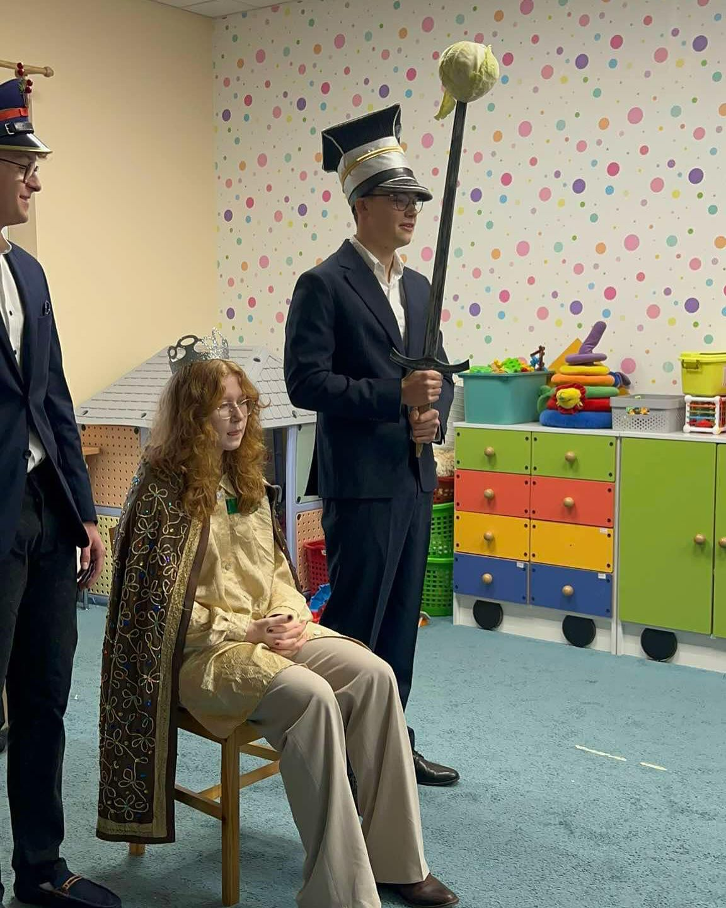
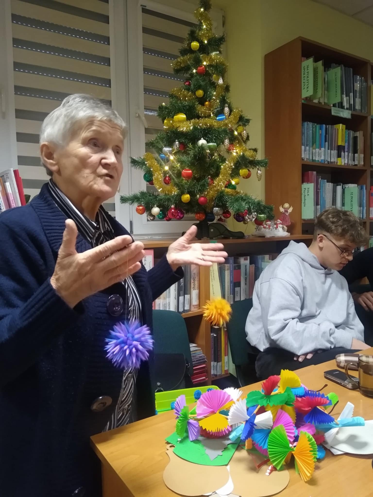
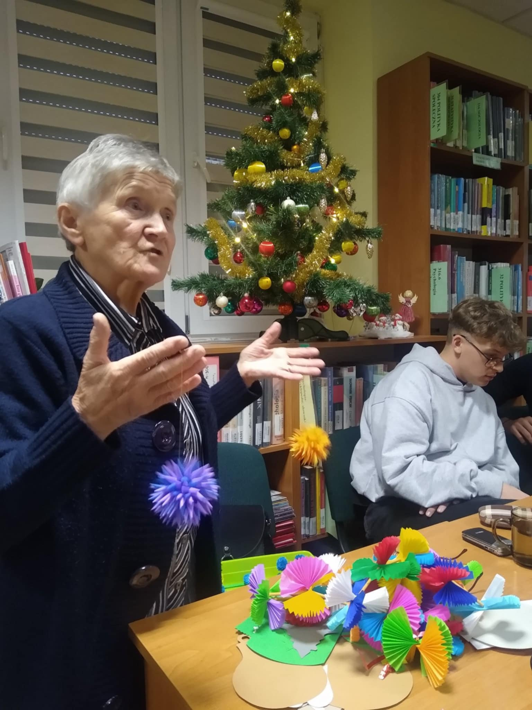

.png)
O nas
Projekt FolkLove2025 jest realizowany w ramach Ogólnopolskiej Olimpiady Zwolnieni z Teorii pod hasłem „Folklor żyje w nas”. Jego celem jest przybliżenie młodzieży obrzędowości i tradycji związanych z polskim folklorem, by zachować je w pamięci kolejnych pokoleń.
Zespół realizujący projekt to uczniowie II Liceum Ogólnokształcącego im. Bohaterów Westerplatte w Garwolinie:
- Zuzanna Buława
- Filip Gawenda
- Bartosz Zadróżny
- Oliwia Tchorek
- Dominika Buczek
- Liderka projektu: Oliwia Dadacz
Wydarzenia
26 lutego 2025 r. dzięki nawiązaniu współpracy z Biblioteką Pedagogiczną im. Heleny Radlińskiej. Filia w Garwolinie mogliśmy wystawić poraz kolejny „Herody Garwolińskie”. Nasz występ został ciepło przyjęty przez zgromadzonych na konferencji bibliotekarzy z powiatu garwolińskiego. Dziękujemy p.dyrektor Urszuli Brych za wsparcie nas przy realizacji projektu.🥰🇵🇱🌷
20 lutego 2025 r. dzięki nawiązaniu współpracy z Gminnym Centrum Animacji i Kultury w Sulbinach i wsparciu p. Wioletty Sybilskiej-Dłubak nasz zespół wziął udział w warsztatach lepienia gliny. Uczniowie 3bLO mieli możliwość poznać techniki powstawania naczyń glinianych, które ściśle są związane z kulturą ludową. Mieliśmy możliwość również wykonać samodzielnie przedmioty codziennego użytku. Zapraszam do galerii wirtualnej ♥️jak na pierwszy raz poszło nam świetnie👏❤️🫶🩷💓💕
Eksponaty- Muzeum Regionalne w Górznie

W ramach Ogólnopolskiej Olimpiady Zwolnieni z Teorii dnia 17 stycznia 2025r. zespół projektu Folklove2025 w składzie: Oliwia Dadacz, Filip Gawenda, Oliwia Tchorek, Zuzanna Buława, Bartosz Zadróżny oraz gościnnie Kinga Mazek i Amelia Zabłocka odwiedził Niepubliczne Przedszkole Juniorek w Garwolinie. Zespół wystawił tradycyjne „Herody Garwolińskie”, przybliżając dzieciom piękno lokalnego folkloru i dawnych tradycji. Przedszkolaki żywo reagowały na rozgrywające się wydarzenia i z zainteresowaniem przyglądały się występującym postaciom. Po spektaklu uczniowie zaproponowali małym milusińskim wspólne zabawy, ciesząc się ich energią i uśmiechami! Cała wizyta przebiegła w ciepłej i miłej atmosferze. Opiekun p. Edyta Kacprowicz 😘🥰
20 lutego 2025 r. dzięki nawiązaniu współpracy z Gminnym Centrum Animacji i Kultury w Sulbinach i wsparciu p. Wioletty Sybilskiej-Dłubak nasz zespół wziął udział w warsztatach lepienia gliny. Uczniowie 3bLO mieli możliwość poznać techniki powstawania naczyń glinianych, które ściśle są związane z kulturą ludową. Mieliśmy możliwość również wykonać samodzielnie przedmioty codziennego użytku. Zapraszam do galerii wirtualnej ♥️jak na pierwszy raz poszło nam świetnie👏❤️
 

W ramach Ogólnopolskiej Olimpiady Zwolnieni z Teorii dnia 17 stycznia 2025r. zespół projektu Folklove2025 w składzie: Oliwia Dadacz, Filip Gawenda, Oliwia Tchorek, Zuzanna Buława, Bartosz Zadróżny oraz gościnnie Kinga Mazek i Amelia Zabłocka odwiedził Niepubliczne Przedszkole Juniorek w Garwolinie. Zespół wystawił tradycyjne „Herody Garwolińskie”, przybliżając dzieciom piękno lokalnego folkloru i dawnych tradycji. Przedszkolaki żywo reagowały na rozgrywające się wydarzenia i z zainteresowaniem przyglądały się występującym postaciom. Po spektaklu uczniowie zaproponowali małym milusińskim wspólne zabawy, ciesząc się ich energią i uśmiechami! Cała wizyta przebiegła w ciepłej i miłej atmosferze. Opiekun p. Edyta Kacprowicz 😘🥰
9 stycznia 2025 r. zespół FolkLove2025 wystąpił podczas spotkania opłatkowego Sekcji Emerytów i Rencistów Związku Nauczycielstwa Polskiego w Garwolinie, prezentując „Herody Garwolińskie”. Herody to tradycyjne ludowe przedstawienie bożonarodzeniowe, które w humorystyczny sposób ukazuje historię króla Heroda i narodzin Jezusa.😘💙🍀
20 grudnia 2024 r. nasz zespół wystawił „Herody Garwolińskie”, tekst został przygotowany przez p. Agnieszkę Karwowską do książki p. Jadwigi Krześniak „Cztery pory roku w obrzędowości ludowej”, którą chcemy wydać. Przedstawienie przygotowaliśmy dzięki wsparciu i zaangażowaniu naszej Mentor p. Angeliki Chabrowskiej. Kolędnicy od zawsze stanowili nieodłączny element folkloru ludowego podczas świąt Bożego Narodzenia. Pojawiali się w domach wieczorem w pierwszy dzień Świąt, przynosząc radosną atmosferę oraz odtwarzając barwne sceny nawiązujące do biblijnej historii narodzin Jezusa Chrystusa. Także na ziemi garwolińskiej tradycja ta miała i nadal ma swoje miejsce. Korowód przebierańców określano mianem Herodów. Ich występy to inscenizacje przedstawiające narodziny Chrystusa oraz rzeź niewiniątek w Betlejem. Główną, choć negatywną postacią tych przedstawień jest król Herod. Jego przybycie zapowiada zwykle wierny Pachołek lub Het Marszałek. W spektaklu pojawiają się także żołnierze, Żyd, Śmierć☠️ odbierająca życie Herodowi oraz Diabeł,👹 który z widłami przybiega po jego duszę. Niestety, tradycja wystawiania Herodów powoli zanika. Współcześnie grupy młodzieży odwiedzające domy ograniczają się często do zaśpiewania jednej kolędy, po czym kończą swój występ.❄️🎄🌲
Niesamowite spotkanie z folklorem!
 

11 grudnia 2024 roku mieliśmy przyjemność uczestniczyć w wyjątkowym wydarzeniu, podczas którego Pani Jadwiga Krześniak, pasjonatka folkloru, przybliżyła nam zanikające tradycje i obrzędy związane z obchodami Świąt Bożego Narodzenia. Podzieliła się z nami notatkami swojego taty oraz nauczyła nas tworzenia różnorodnych ozdób świątecznych, które dawniej zdobiły choinki. Pani Jadwiga opowiedziała o symbolice dekoracji świątecznych oraz zaprezentowała ciekawe i zabawne przysłowia związane z pogodą. Mieliśmy również okazję zadać jej kilka pytań i nagrać krótki wywiad. Relację z tego wydarzenia możecie znaleźć na naszych projektowych profilach w mediach społecznościowych. Zachęcamy Was szczególnie do obejrzenia filmu z wywiadu, w którym Pani Jadwiga dzieli się swoją wiedzą i pasją! Jeśli interesują Was nasze działania, zapraszamy do polubienia i obserwowania naszych kanałów!
2 grudnia 2024 roku, z inicjatywy uczniów realizujących projekt FolkLove2025 w ramach Olimpiady Zwolnieni z Teorii, odbyły się warsztaty bożonarodzeniowe prowadzone przez panią Edytę Sak z Muzeum Regionalnego w Łukowie oraz pana Krzysztofa Osaka, twórców ludowych. W trakcie warsztatów uczestnicy wykonywali gwiazdy z opłatka, które były tradycyjnymi ozdobami umieszczanymi na podłaźniczce.❄️🌨️🎄 Podłaźniczka, zawieszana u pułapu nad stołem wigilijnym, była przystrajana jabłkami, orzechami, ozdobami z papieru oraz gwiazdami z kolorowego opłatka. Gałęzie (lub czubek) drzewa iglastego ścinano na podłaźniczkę w Wigilię bardzo wcześnie rano, a gospodarz, który jako pierwszy wniósł ją do izby, miał zapewnić sobie najwcześniejszy wzrost i dojrzewanie zboża w nadchodzącym roku. Pani Edyta Sak w barwny sposób przybliżyła młodzieży bożonarodzeniowe tradycje i obyczaje polskie, ukazując bogactwo ich symboliki. Na przykład liczba dwanaście odnosi się jednocześnie do dwunastu apostołów, dwunastu miesięcy w roku oraz dwunastu wigilijnych potraw. Koniec Adwentu obwieszczała natomiast gra na ligawie, tradycyjnym instrumencie, na którym uczniowie mieli okazję spróbować swoich sił podczas warsztatów. Choć gra na ligawie nie jest łatwa, naszemu koledze, Mateuszowi Wasążnikowi, udało się opanować podstawy tej sztuki.🎭🖼️🌈🩷 Młodzież z zainteresowaniem słuchała opowieści prowadzącej, a dużym entuzjazmem cieszyła się możliwość własnoręcznego wykonania ozdób z kolorowych opłatków. Organizacja warsztatów była możliwa dzięki wsparciu finansowemu Rady Rodziców, za co serdecznie dziękujemy. Tego rodzaju inicjatywy nie tylko propagują, ale także przypominają polskie tradycje, które choć mało znane, są niezwykle interesujące i wartościowe
Projekt
Projekt FolkLove2025 promuje tradycję i kulturę ludową. Chcemy przybliżyć młodym ludziom obrzędowość związaną ze świętami i zachęcić ich do poszerzania wiedzy na ten temat. Zależy nam, aby tradycje ludowe nie poszły w zapomnienie i znalazły swoje miejsce w życiu codziennym.
Kultura ludowa jest fundamentem naszej tożsamości narodowej. To dzięki niej przetrwaliśmy zabory i represje w czasie II wojny światowej.
W ramach projektu planujemy:
- Herody Garwolińskie: Przywrócenie tradycji wystawiania widowiska, które ostatni raz miało miejsce w 1984 roku.
- Wydanie książki: Publikacja autorstwa pani Jadwigi Krześniak z rozdziałem o tradycji wypieku chleba p. Angeliki Chabrowskiej.
O folklorze
Folklor to kluczowy element naszej tożsamości narodowej, łączący pokolenia i społeczności.
Boże Narodzenie
Kolędowanie, pastorałki i wigilijny stół to centralne elementy świąt w polskiej tradycji.
Wielkanoc
Tradycje takie jak malowanie pisanek, święcenie pokarmów i śmigus-dyngus wzbogacają świąteczne obchody.